Back to builder
Android 3D scenery on the Thor
Download verified PokéDaisy APK
All three profiles passed the same APK’s field, idle battle, active battle and automatic climate tests, with return to the field visually checked. Raised grass, flowers, shrubs, selected rocks and Let’s Go palms use solid geometry. Unbound’s selected snow rocks retain stone sides and snow caps; stair and border tiles are excluded. Startup audio queues real samples before playback begins, leaving buffer headroom for mixer bursts; normal game timing is retained. Live Strength and Rock Smash objects now use solid geometry in the qualified scenes. Automatic climate follows calendar seasons and selects season-weighted weather every 15 minutes, with gradual fades. Manual choices remain available; native scripted weather takes priority. Grass and verified dirt paths receive textured winter coverage, live cuttable trees use solid geometry, and verified green Unbound scenery has raised trees, flowers, shrubs and rocks. Coverage remains incomplete.
The native audio path retains partial mixer writes in order and primes playback with real samples. Nine cold process launches passed the audio checks on this exact APK; startup visual warm-up is reported separately from steady gameplay. Tested with Voxel 3D on, Expand aspect, Reduced effect detail and native 1x game speed. Full effect detail was not qualified in this pass.
Let’s Go Pikachu
Minimum sampled field / battle / active / climate / winter FPS: 59.6 / 59.7 / 59.6 / 59.6 / 59.6. Zero unshown frames, dropped audio samples and active audio underruns in measured phases.


2D/3D, four seasons and battle captures
Radical Red
Minimum sampled field / battle / active / climate / winter FPS: 59.6 / 59.7 / 59.6 / 59.6 / 59.6. Zero unshown frames, dropped audio samples and active audio underruns in measured phases.


2D/3D, four seasons and battle captures
Unbound
Minimum sampled field / battle / active / climate / winter FPS: 59.7 / 59.7 / 59.7 / 59.6 / 59.6. Zero unshown frames, dropped audio samples and active audio underruns in measured phases.

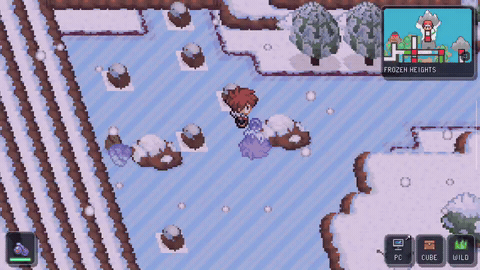
2D/3D, four seasons and battle captures
Let’s Go Pikachu: weather, scenery interactions and battles
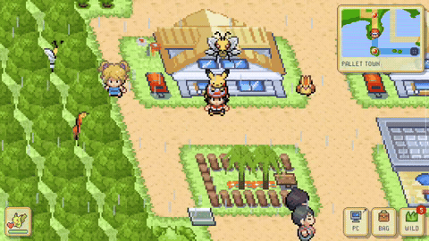
rain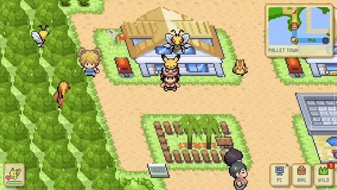
snow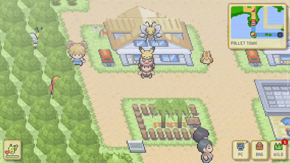
fog boulder-moving
boulder-moving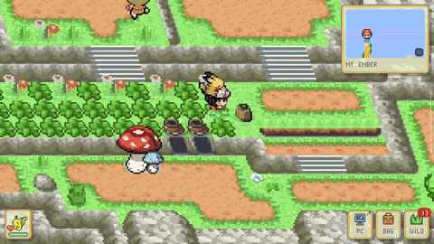
rock-smash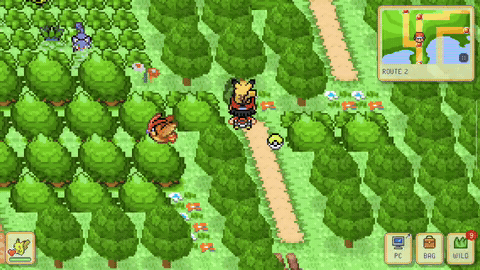
cut-tree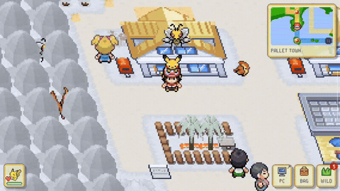
winter-ground battle
battleUnbound: weather, scenery interactions and battles
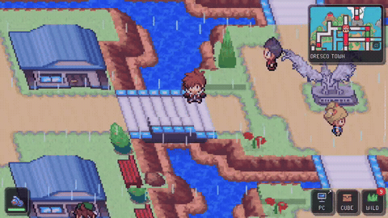
rain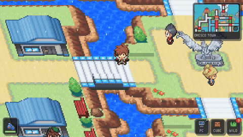
snow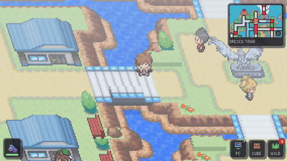
fog boulder-moving
boulder-moving rock-smash
rock-smash cut-tree
cut-tree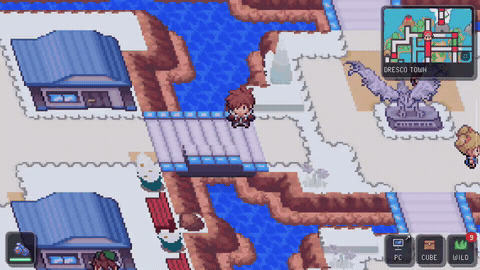
winter-ground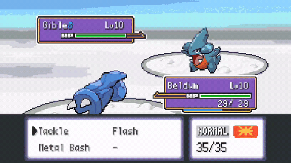
battleUnbound seasons in Dresco Town
Verified grass-backed and cliffside small conifers now have closed 3D canopies and snow-covered bases. Water-backed variants remain excluded. This green outdoor scene has a separate winter pacing check: minimum sampled 59.6 FPS, with no unshown frames or dropped audio samples.


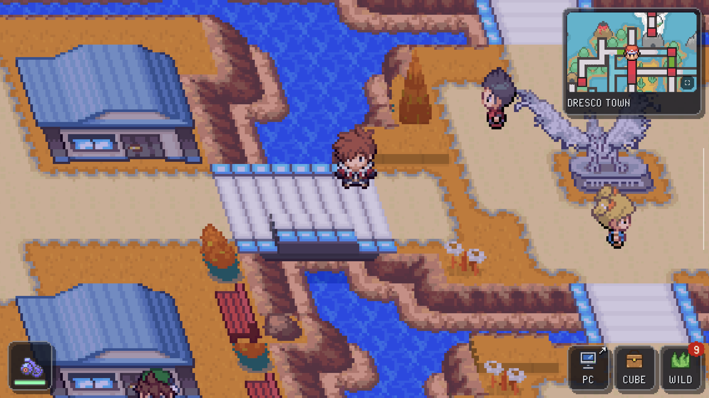

Automatic weather changing with the clock
Recorded on the Thor with no settings or clock changes. Weather fades while seasonal foliage remains stable; the exact observed transition is recorded in the verification report.

Build 3709641e534ce5fb01fd9cfa9827734e7759e91a; APK SHA-256 792acde17cfb990572883d0da66811cde74ab8a407a48bc0bb0b753af513b4c0. Exact measurements and review scope. Targeted scenes, not full-playthrough certification. GIFs use 10 FPS for size.